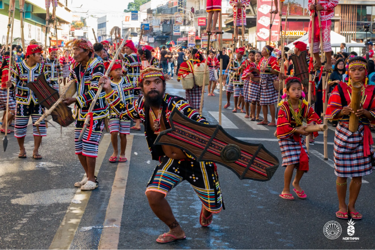
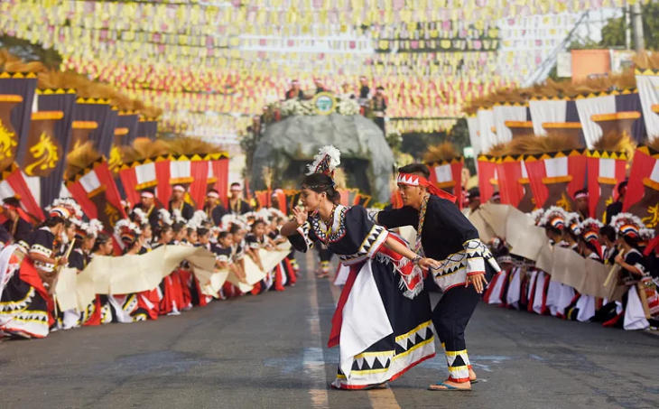
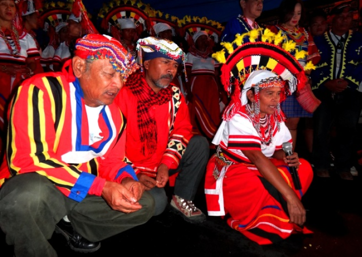
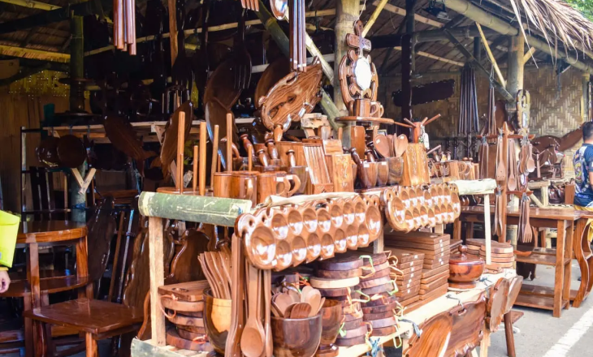
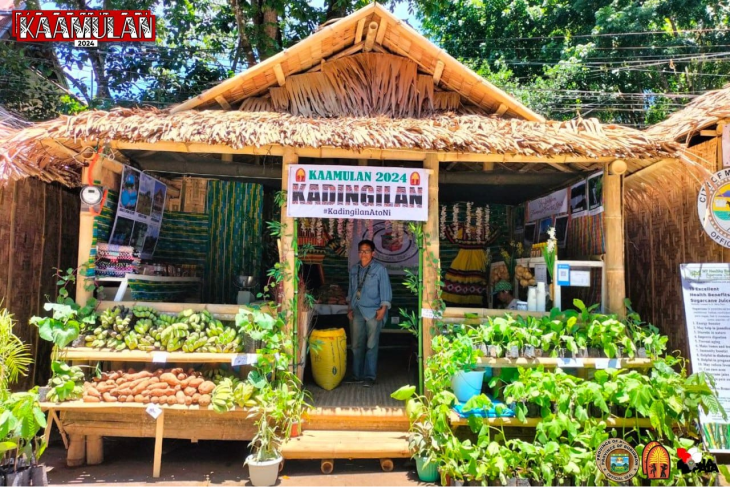
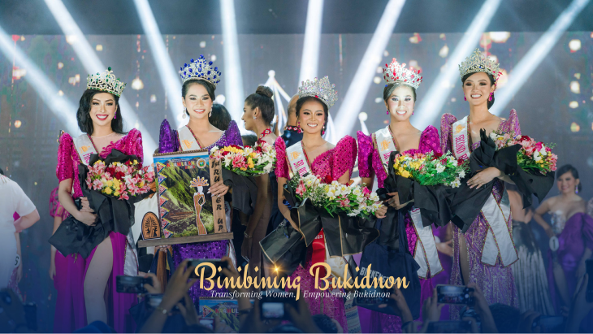
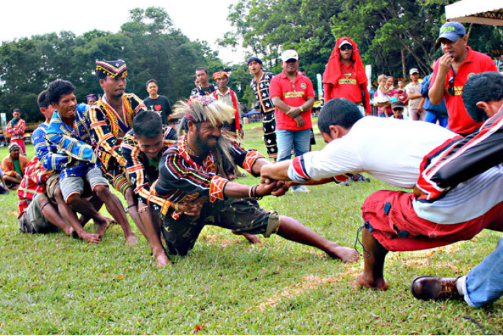
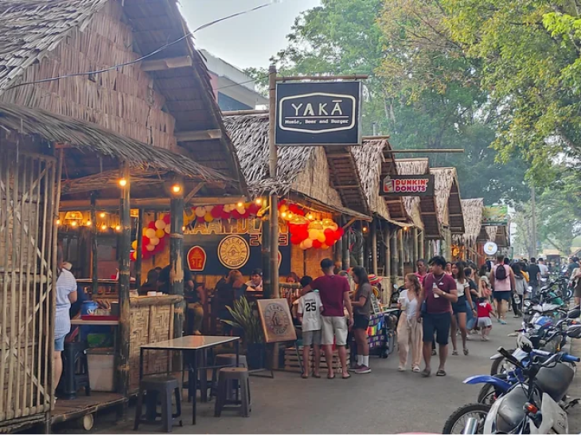
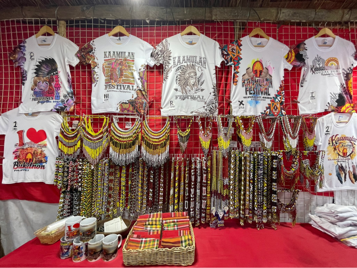
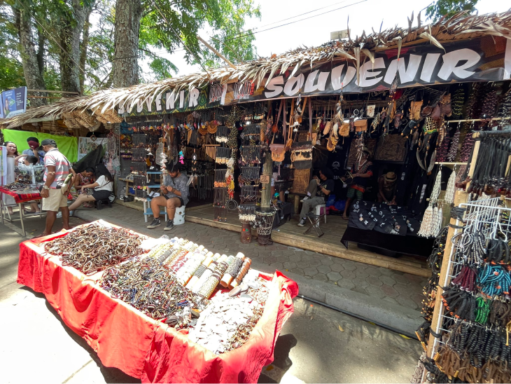

Highlights of the Kaamulan Festival
Feel the excitement of the Kaamulan Festival! Enjoy colorful dances, learn about different cultures, and explore the busy fair. This festival celebrates the heritage of Bukidnon with lively parades, traditional shows, and tasty local foods. It's a special where everyone comes together to celebrate our community and traditions.
The Main Attraction
1. Street Dancing Competition
The grand street dancing competition is a highlight of the Kaamulan Festival. Participants from different indigenous tribes showcased their traditional dances, vibrant costumes, and musical talents in a lively and colorful parade.
2. Indigenous Music and Dance Performances
Throughout the festival, visitors can enjoy a variety of indigenous music and dance performances. These showcase the unique rhythms, melodies, and movements of the Bukidnon tribes, providing a glimpse into their cultural expressions.
3. Rituals and Ceremonies
The Kaamulan Festival includes various rituals and ceremonies performed by the indigenous tribes. These rituals often have deep spiritual and cultural significance, and they serve as a way to honor ancestral traditions and seek blessings for the community.
4. Cultural Exhibits
The festival features cultural exhibits where visitors can explore traditional crafts, arts, and artifacts of the indigenous tribes. These exhibits offer insights into their craftsmanship, weaving techniques, woodwork, and other artistic traditions.
5. Agro-Industrial Fair
An important component of the Kaamulan Festival is the agro-industrial fair. It showcases the agricultural products, local delicacies, handicrafts, and other products of Bukidnon, highlighting the region's rich agricultural resources.
6. Beauty Pageant
The festival includes a beauty pageant, where candidates representing different indigenous tribes compete for the title of “Binibining Bukidnon” The pageant not only focuses on physical beauty but also emphasizes cultural awareness and the candidate's knowledge of their heritage.
7. Sports Competitions
The festival also hosts traditional sports competitions, allowing visitors to witness and participate in the traditional games and sports of the indigenous tribes.
8. Local Cuisine
Visitors have the opportunity to savor the flavors of Bukidnon through the various food stalls and culinary offerings available during the festival. Local delicacies, including traditional dishes and indigenous treats, are showcased and enjoyed by attendees.
9. Ethnic Costumes and Accessories
The colorful and intricate traditional costumes worn by the participants and performers during the festival are a sight to behold. The costumes reflect the tribes' cultural identity and are adorned with symbolic designs, beadwork, and woven patterns.
10. Cultural Workshops and Demonstrations
The festival often includes workshops and demonstrations where visitors can learn about indigenous crafts, traditional dances, music, and other cultural practices. These interactive sessions allow for a deeper understanding and appreciation of the Bukidnon tribes' cultural heritage.
